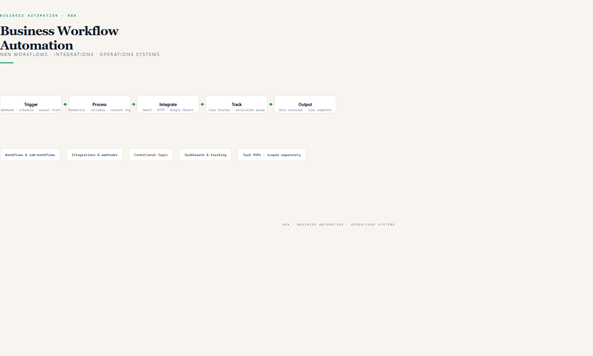
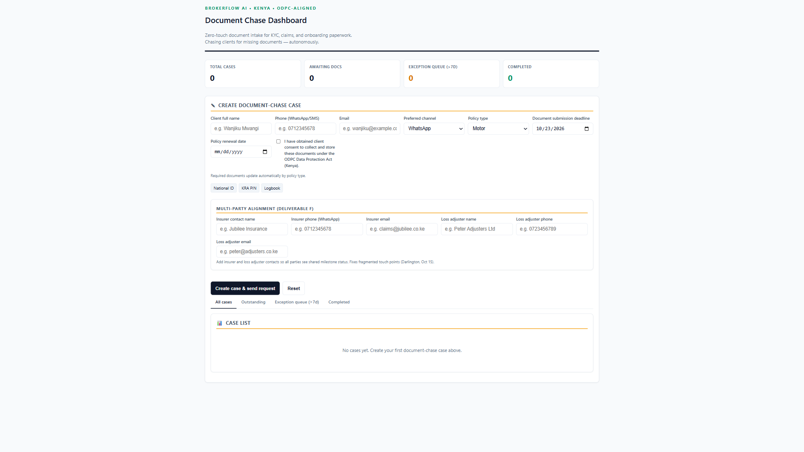

scene 1 · hook
Repetitive tasks.
Fragmented tools.
Awaiting docs
6
scene 2 · introduction

n8n Workflows · Integrations · Operations Systems
scene 3 · proof
Real n8n workflow: Document Chasing Escalation
Document Chasing Trigger
executeWorkflowTrigger · passthrough
Normalize New Chase
Set · consent & stage
Gmail — Secure Upload Link
send email w/ tokenised link
Update Tracker Sheet
Google Sheets · append
Switch — Escalation Day
+2 / +4 / +7 · renewals
Exception Queue
>7 days · senior review
scene 4 · application

Completed
0
scene 5 · closing
Built around your existing process — WhatsApp, SMS, email, secure upload links.
Tell me what you want to automate.
Business workflow automation · n8n · integrations · operations systems